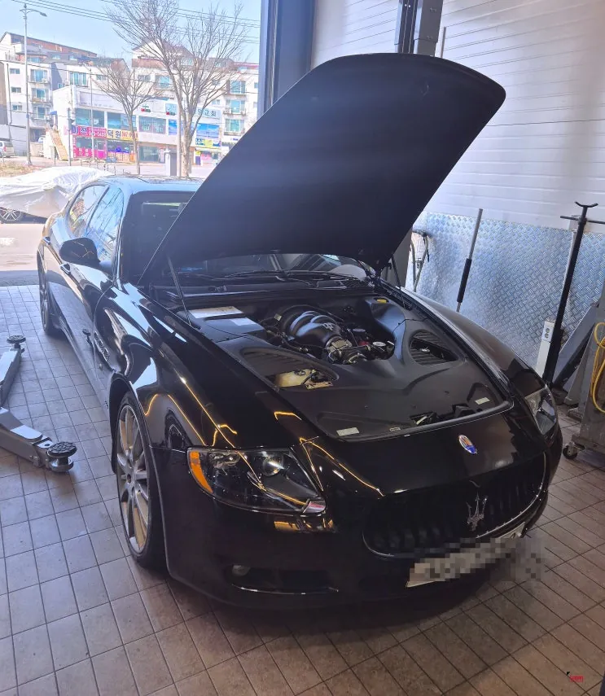
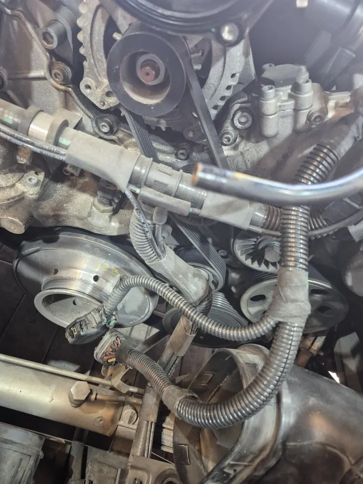
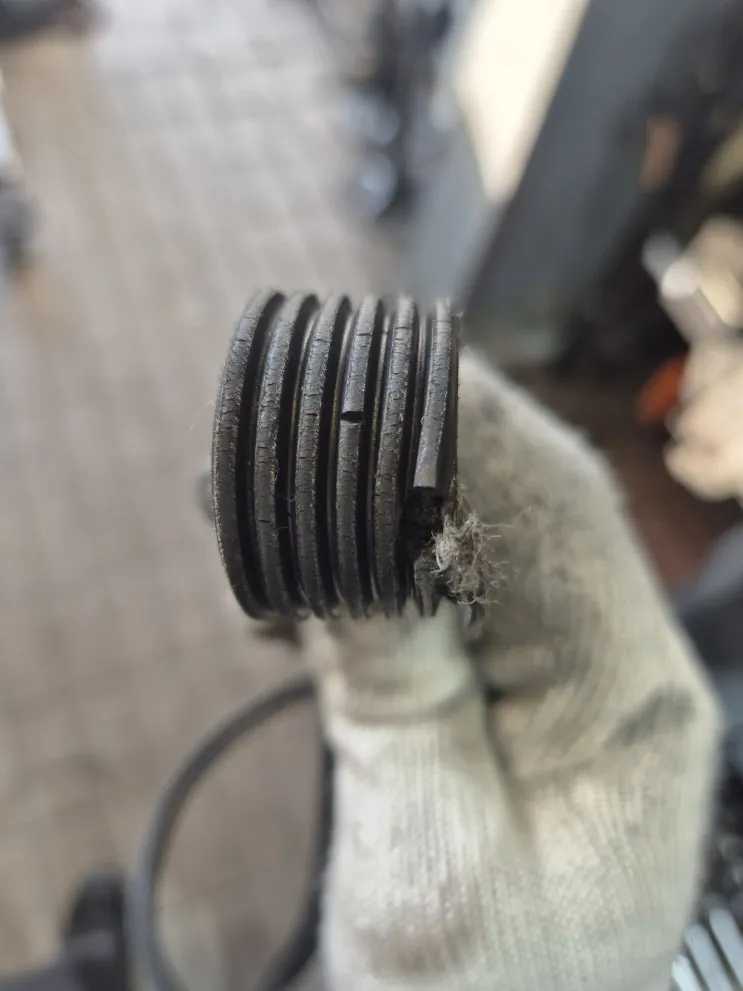
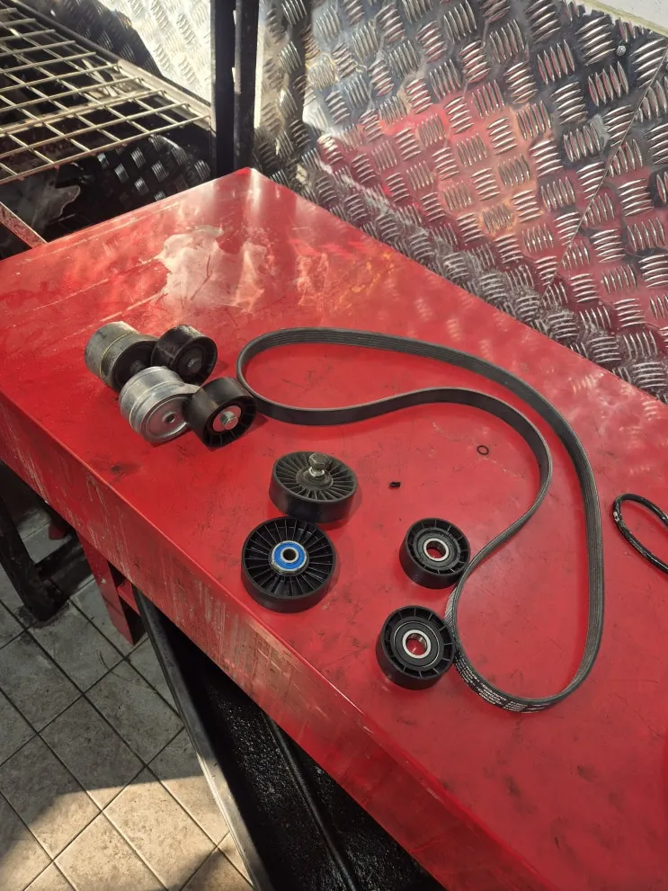
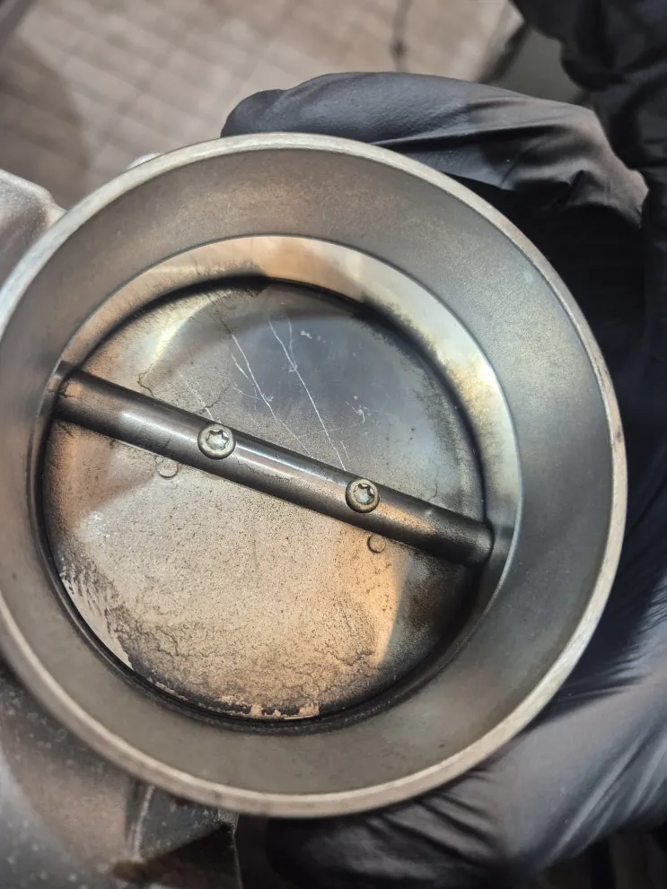
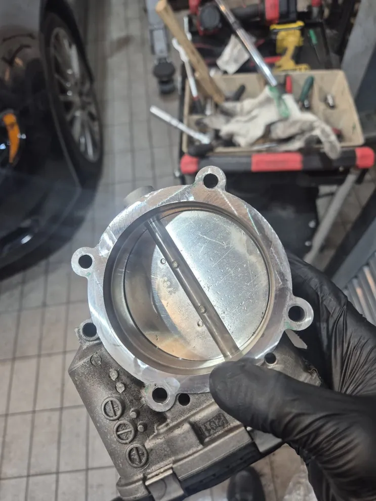
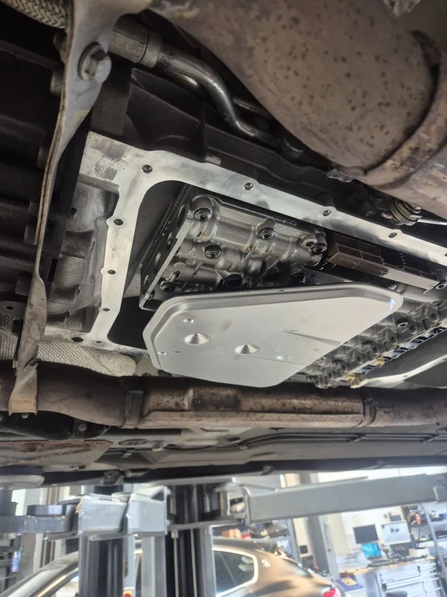
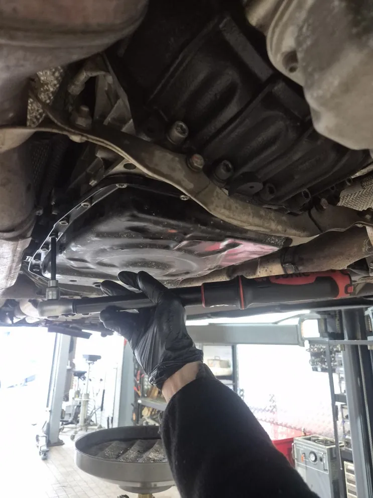

콰트로포르테(M139) 소모품 정비 — V벨트 세트·ZF 6단 미션오일·패드·엔진오일
At a glance한눈에 보기
- 차량
- 마세라티 콰트로포르테
- 증상
- 소모품 교환 시기 도래, V벨트 마모·손상
- 진단
- 콰트로포르테(M139)는 기본 점검에서 V벨트가 교환 시기를 넘겨 마모·손상된 것이 확인돼, V벨트 세트·엔진오일·ZF 6단 미션오일·브레이크패드 네 가지를 교환했습니다. V벨트 작업 중 드러난 스로틀바디도 함께 세척했습니다.
- 작업
- 엔진룸·하체 기본 점검
- V벨트 세트 교환
- 스로틀바디 세척
- ZF 6단 미션오일·내부 필터·가스켓 교환
- 브레이크패드 교환
- 엔진오일 교환

상담과 기본 점검
소모품을 무엇부터 바꿔야 할지 상담을 요청한 콰트로포르테(M139)를 먼저 기본 점검했습니다. 엔진룸 육안 점검과 하체 점검으로 누유·누수가 있는지 보고, 주행거리와 소모품 교체 이력을 맞춰 지금 필요한 작업을 정리합니다.
점검 결과 전반적으로 교환 시기가 돼 있어 V벨트 세트, 브레이크패드, 엔진오일, 미션오일 네 가지를 교환했습니다.


V벨트 세트 교환과 스로틀바디 세척
V벨트는 교환 시기를 넘겨 이미 마모와 손상이 진행된 상태였습니다. V벨트가 끊어지면 워터펌프가 멈춰 엔진이 과열되거나, 발전기가 멈춰 시동이 꺼질 수 있습니다. 벨트를 바꿀 때는 아이들 베어링과 벨트 텐셔너를 함께 교환합니다.
V벨트 작업을 위해 에어필터 케이스를 떼어 내면 스로틀바디 상태를 볼 수 있어 세척도 함께 했습니다. 스로틀바디는 가속 페달에 따라 엔진으로 들어가는 공기량을 조절하는 부품이라 깨끗하게 유지하는 것이 좋습니다.


ZF 6단 미션오일 교환
콰트로포르테 M139의 ZF 6단 변속기 오일을 교환하면서 내부 오일 필터와 가스켓을 함께 바꿨습니다. 이 변속기는 오일팬이 따로 분리된 구조라 팬은 그대로 두고 필터와 가스켓만 교환합니다. 볼트는 토크렌치로 규정 토크에 맞춰 조였습니다.


브레이크패드·엔진오일 교환
브레이크패드와 캘리퍼 상태를 점검한 뒤 패드를 교환하고, 엔진오일도 새로 넣었습니다. 패드와 디스크는 제동할 때마다 닳는 소모품이라 정기적으로 두께를 확인해야 합니다.
로건서비스가 안내하는 기준은 미션오일·디퍼렌셜 오일과 V벨트 세트는 60,000km, 엔진오일은 가솔린 8,000km·디젤 10,000km입니다. 주행거리가 가까워졌다면 점검 때 함께 확인해 보세요. 상담은 카톡으로 먼저 하셔도 됩니다.

자주 묻는 질문
콰트로포르테 소모품은 언제 바꾸나요?
로건서비스는 미션오일·디퍼렌셜 오일과 V벨트 세트는 60,000km, 엔진오일은 가솔린 8,000km·디젤 10,000km를 기준으로 안내합니다. 실제 교환은 점검으로 상태를 확인한 뒤 정합니다.
ZF 6단 미션오일을 갈 때 필터도 바꾸나요?
네. 내부 오일 필터와 가스켓을 함께 교환합니다. 오일팬이 분리형이라 팬은 교환하지 않습니다.
이 작업의 원문 기록: 네이버 블로그에서 보기
Consultation
마세라티 콰트로포르테, 비슷한 증상이 있나요?
증상 사진이나 경고등 화면을 카톡으로 먼저 보내 주시면 확인 후 안내해 드립니다. 전국 탁송 상담 가능.